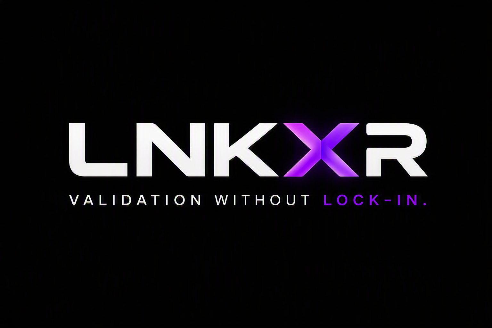

Knowledge
Preserve what engineering knows.
Transform requirements, specifications and engineering documents into structured validation knowledge.

LNKXR connects engineering knowledge, simulation, software and hardware while keeping validation intelligence independent from the toolchain beneath it.
Different tools. Different hardware. Different environments. Engineering knowledge gets trapped between them.
LNKXR is being built to separate validation knowledge from the hardware and tools used to execute it. The validation intent stays reusable while the execution target evolves.
Transform requirements, specifications and engineering documents into structured validation knowledge.
Turn engineering intent into reusable validation targets, test definitions and evidence.
From simulation and SIL to CHIL, HIL and physical hardware without binding validation knowledge to a single vendor.
LNKXR AI explores how engineering information can become structured, traceable and reusable validation intelligence.
Tools evolve. Hardware changes. Vendors come and go. The engineering knowledge behind validation should remain reusable.
LNKXR is an early-stage engineering technology project exploring a vendor-neutral approach to validation for complex embedded and power-electronic systems. The platform is currently under active development.
Interested in vendor-neutral validation, engineering AI or the future of HIL?